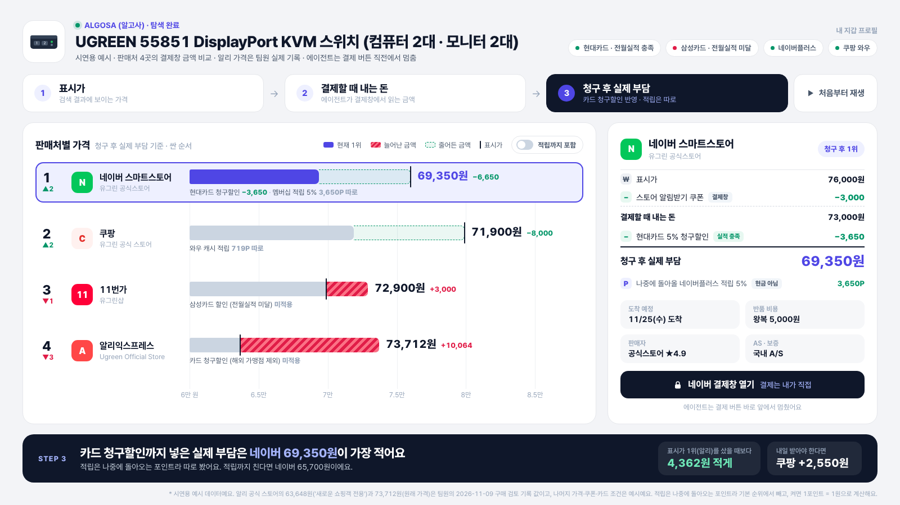

제품을 정확히 이해하고 사세요.
더 깊이 이해하고, 내 상황에 더 잘 맞는 선택을 만드는 AI 쇼핑 에이전트
빠르고 단순한 구매를 넘어,
나에게 더 맞고, 더 디테일한 쇼핑.
빠르지만, 왜 이 제품인지는
사용자가 알 수 없습니다.
목표는 더 빨리 사는 것이 아니라, 산 뒤에도 만족하는 선택입니다.
예시: 컴퓨터 두 대와 모니터 하나,
배경지식은 없습니다.
“두 대의 컴퓨터를 하나의 모니터에서 전환하면서 사용하고 싶어요.”
팀원의 실제 KVM 구매 사례 · 2026. 11. 09
HDMI 1.4 ×2 · DP 1.2 ×1
무엇을 사야 하고, 어떻게 연결해야 할까요?
아무리 뛰어난 에이전트도,
묻지 않으면 알 수 없는 것이 있습니다.
기준이 다르면, 맞는 제품도 달라집니다.
이 정보는 검색으로 찾을 수 없습니다. 사용자에게 물어야만 알 수 있습니다.
실제로 AI는 팀원의 모니터 사양을 받고 나서야 ‘75Hz는 DP로만 나온다’를 알려줬습니다.
결론만 받으면,
내 상황에 맞는지 판단할 수 없습니다.
답은 있지만 근거는 보이지 않습니다. 얼마나 분석했는지, 내게 맞는 판단인지 알 수 없습니다.
그렇다고 길게 물으면,
이해가 새어 나갑니다.
선택기 → KVM → DP KVM →
NEXT-8002 → UGREEN 25962 → 55851
결국 가격도 몰랐습니다. 알리 ‘신규 회원가’ 63,648원 → 내 결제창에선 73,712원 (+10,064), 케이블·어댑터 4개 별도
팀원의 실제 AI 채팅 기록(재구성) · 텍스트는 F자로 훑어 읽힌다(NN/g 시선 추적 연구)
대화 대신 지도.
대화는 흘러가도, 이해는 남도록.
질문도 답도 노드 안에서,
내 조건은 계속 보입니다.
몰랐던 조건 하나가 선택을 바꿉니다: HDMI 선택기 → DP KVM
흐름 시연 프로토타입(index.html) · 실제 AI 검색은 연결 전
가격도 구조로 이해합니다.
기준마다 1위가 바뀝니다.
| 기준 | 1위 | 금액(원) |
|---|---|---|
| 표시가 | 알리 | 63,648 |
| 결제할 때 | 쿠팡 | 71,900 |
| 청구 후 실제 부담 | 네이버 | 69,350 |
알리는 ‘신규 회원가’가 빠져 73,712원으로 4위.
에이전트는 결제 버튼 직전에서 멈추고, 결제는 내가.

같은 지도, 다른 상품.
패알못의 청바지도 알고 삽니다.
연결 구성도 자리에 실측 비교 도식이 들어갈 뿐, 지도의 문법은 같습니다. 화분 · 숙소도 마찬가지.
개념 예시 · 커뮤니티 리서치의 ‘사이즈 실패’ 불편 33건
에이전트는 묻고, 구조화하고,
직접 봅니다.
오늘 결정론적 가격 계산 · 온디바이스 개인정보 가림 · 모델코드 상품 매칭 로드맵 Minds 기억·감시 · AIR 위임 증명 · UCP · AP2 v0.2
이해는 로그인 없이,
결제는 내가 합니다.
이해하고 고른 선택이,
산 뒤의 만족으로 이어지도록.
측정 계획 (아직 측정 전) 고른 이유 설명 가능 여부 · 몰랐던 조건 발견 수 · 표시가 대비 실제 총비용 차이 · 구매 후 만족·반품
딸깍 대신, 알고 사세요.
제품을 정확히 이해하고 사는 쇼핑 · github.com/9saenghwalgwan/future-commerce-challenge
출처와 데이터 표기
- 팀원 KVM 구매 검토 기록 · 2026-11-09 AI 채팅을 재구성, 질문 순서는 일부 다를 수 있음
- 팀 리서치: 국내 커뮤니티·Hacker News 쇼핑 글 2,551건 분석 · 국내 쇼핑 불편 관련 1,013건, ‘사이즈 실패’ 33건 (2026-11-19)
- NN/g, F-Shaped Pattern For Reading Web Content · 2006 원 연구, 2017 재확인
- IAB × Talk Shoppe, AI 쇼핑 이용자 조사 · 미국 n=600, 95%가 판매처에서 추가 확인
- Riskified, 에이전트 커머스 소비자 조사 · 5개국 n=5,100, 2026.9
- 디시인사이드 PC 갤러리 · “챗GPT 추천대로 살려고하는데 요거 좀 믿을만 할까요?”
- UCP · ACP · AP2 v0.2 공개 스펙 · 표준 로드맵과 결제 위임 단계 근거
- 결정 보드 시연 데이터 · 알리 63,648원·73,712원만 실제 기록, 나머지 가격·쿠폰·카드 조건은 예시
- 프로토타입 · index.html(이해 지도 흐름 시연), prototype/price-compare-kvm.html(결정 보드). 실제 AI 검색·결제는 미연결